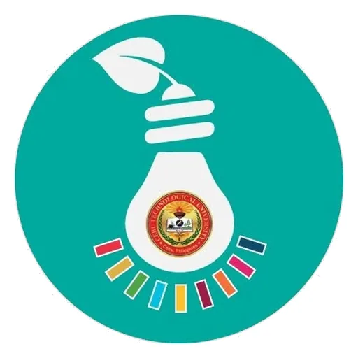

CTU-ATBI — DOST-PCAARRD Agri-Aqua TBI (Cebu Technological University)
Cebu Technological University — Tuburan Campus, with DOST-PCAARRD · Region VII
CTU-ATBI is the DOST-PCAARRD Agri-Aqua Technology Business Incubator of Cebu Technological University — a joint DOST-PCAARRD–CTU project that provides mentoring, business and technical know-how, and incubator space to startups and MSMEs using agri-aqua technologies, so they can become economically mature and sustainable.
- Category
- Technology Business Incubator
- Host institution
- Cebu Technological University — Tuburan Campus, with DOST-PCAARRD
- City
- Tuburan, Cebu
- Region
- Region VII
- Operating status
- Operating
About the Center
It is one of 22 agri-aqua incubators in DOST-PCAARRD's national ATBI Network, drawn from state universities and colleges across the country, and was awarded as part of the programme's fourth batch of grantees. The project leader is Dr. Adrian P. Ybañez, CTU Vice-President for Research and Development.
Operations are anchored at the CTU-Tuburan Campus, where the incubator shares premises with the campus Fab Lab (the CTU-TC ATBI/Fab Lab). From the outset the incubator was designed to draw on CTU's University Shared Facilities — the Food Innovation Centers and the Fab Labs — both to recruit incubatees and to turn university innovations into commercially viable ventures.
The incubator works directly with farmers and fisherfolk, not only campus-based founders. Its ATBI Incubation Season launched on February 20, 2026, bringing together participants from barangays across Tuburan, Cebu, in partnership with the LGU of Tuburan through the DSWD Sustainable Livelihood Program. Recent work includes supporting Phase 4 of a solar-powered rainwater harvesting project in Alegria.
Programs & Services
- Agri-Aqua Business Incubation — mentoring, business and technical know-how, and incubator space for startups and MSMEs commercializing agri-aqua technologies.
- ATBI Incubation Season — a structured series of learning engagements taking incubatees from ideation through to commercialization and market readiness.
- Farmer and fisherfolk enterprise development — community-facing incubation for primary producers across Tuburan's barangays, delivered with the LGU and the DSWD Sustainable Livelihood Program.
- University Shared Facilities access — use of CTU's Food Innovation Centers and Fab Labs, including the co-located CTU-TC ATBI/Fab Lab, for prototyping and product development.
- Technology adoption and commercialization — identifying technology adopters and moving mature agri-aqua technologies into viable agribusinesses through incubation and acceleration.
- Spin-off company formation — with TBID, the ATBI has run sessions preparing faculty researchers to create spin-off companies.
- Technology management, marketing, networking, and administrative support — the standard DOST-PCAARRD ATBI service set.
- National ATBI Network participation — consultation and programme review across the 22-incubator network.
Sources: CTU Agri-Aqua TBI on Facebook · CTU-ATBI taps University Shared Facilities · CebuTech Tuburan Kicks Off ATBI Incubation 2026 · CTU-ATBI Joins National ATBI Network Consultation · TBID, ATBI tap ISU on spin-off companies · DOST-PCAARRD ATBI programme
Contact
Sources & references
- ctu.edu.ph/tuburan/2026/02/23/cebutech-tuburan-kicks-off-atbi-incubation-20…
- ctu.edu.ph/tuburan/2022/06/06/ctu-atbi-taps-university-shared-facilities-fo…
- ctu.edu.ph/tuburan/2022/08/22/ctu-atbi-joins-national-atbi-network-consulta…
Details are drawn from public records and the sources above, July 2026.
Startupreneur Innovation Hub · synced from the Notion catalog (July 2026) · status: published.